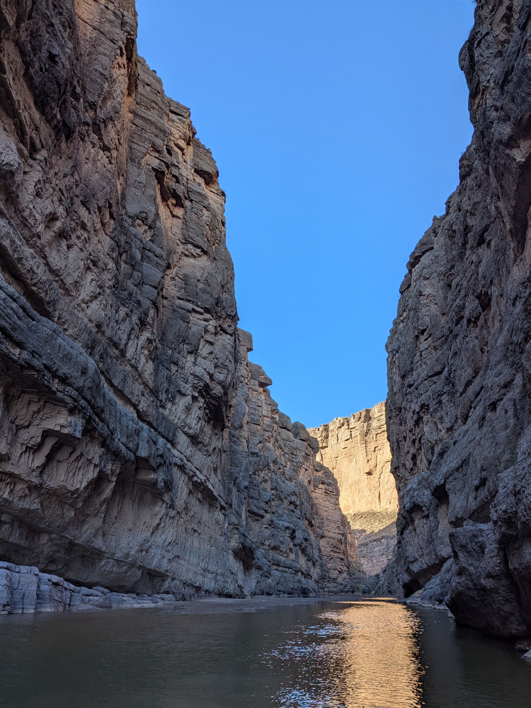
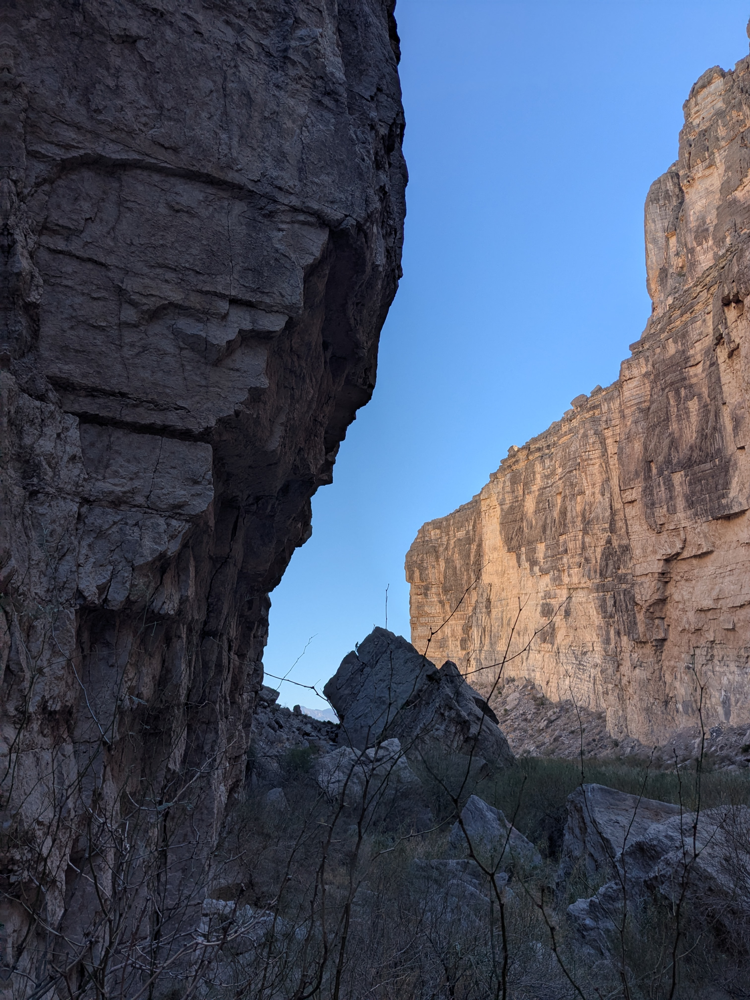
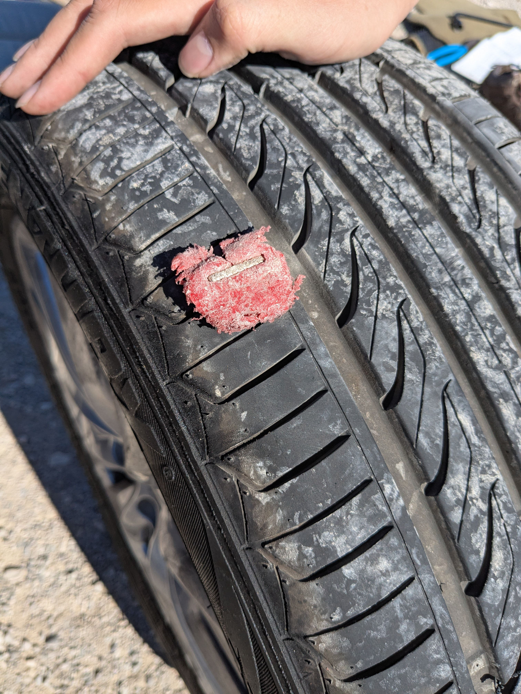
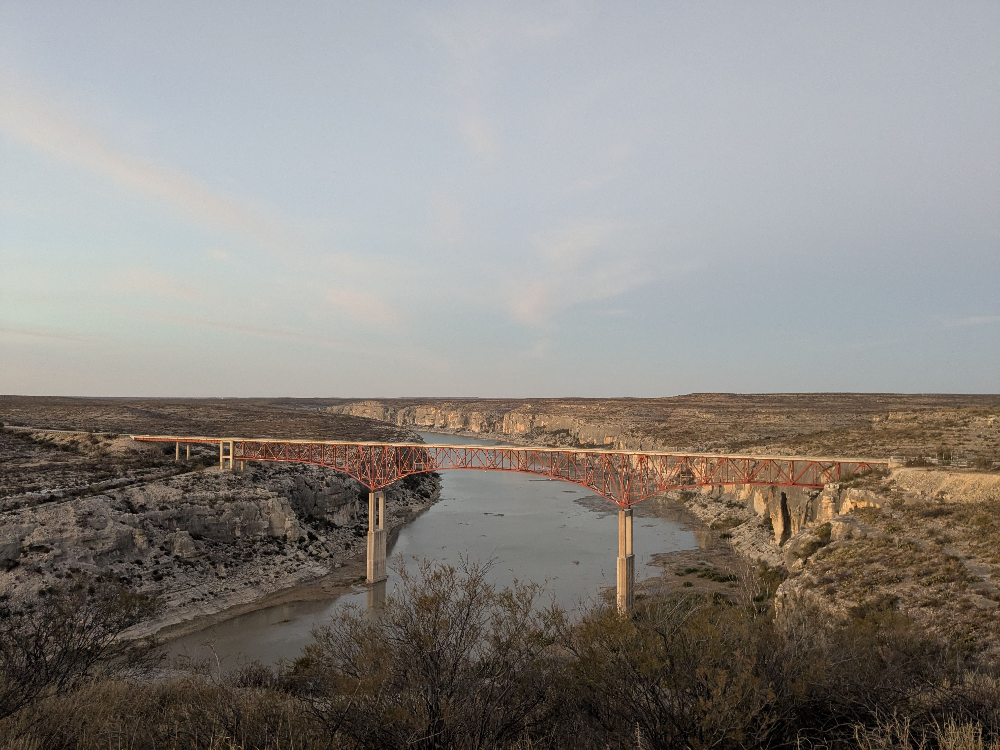
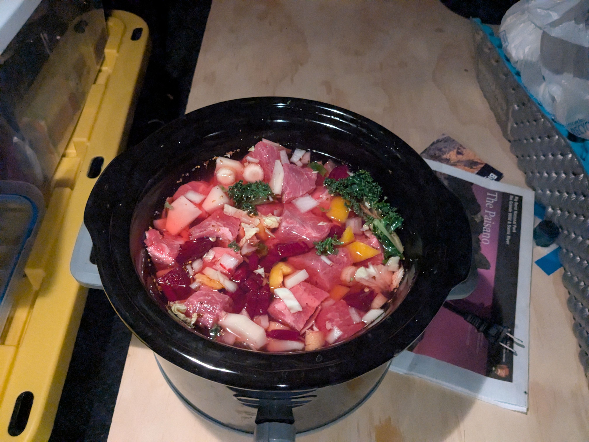
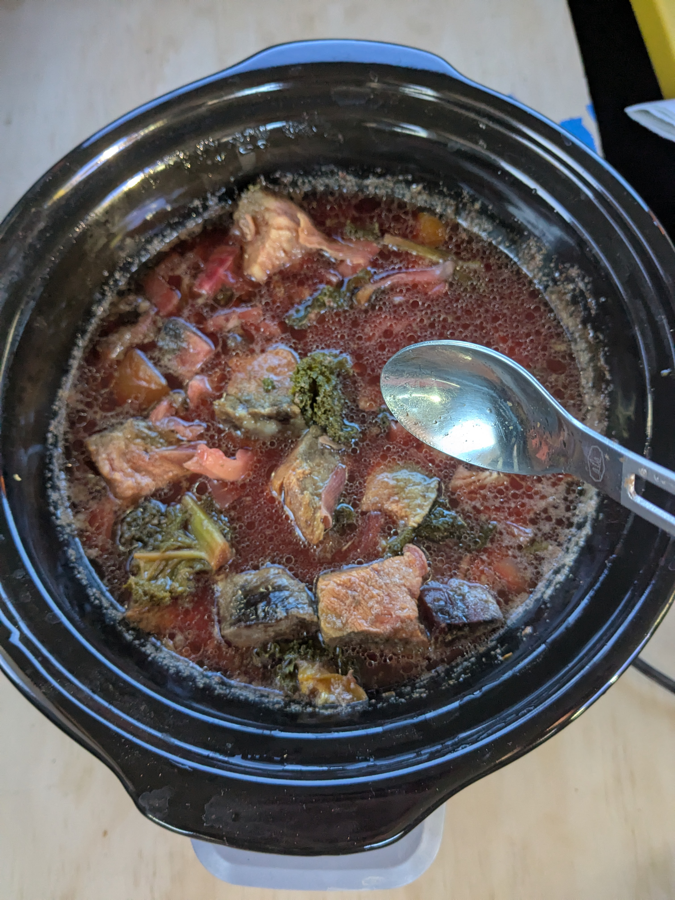
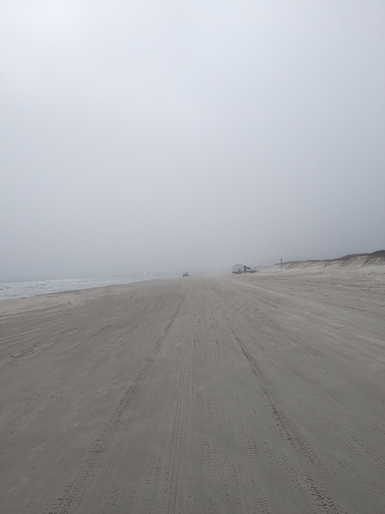
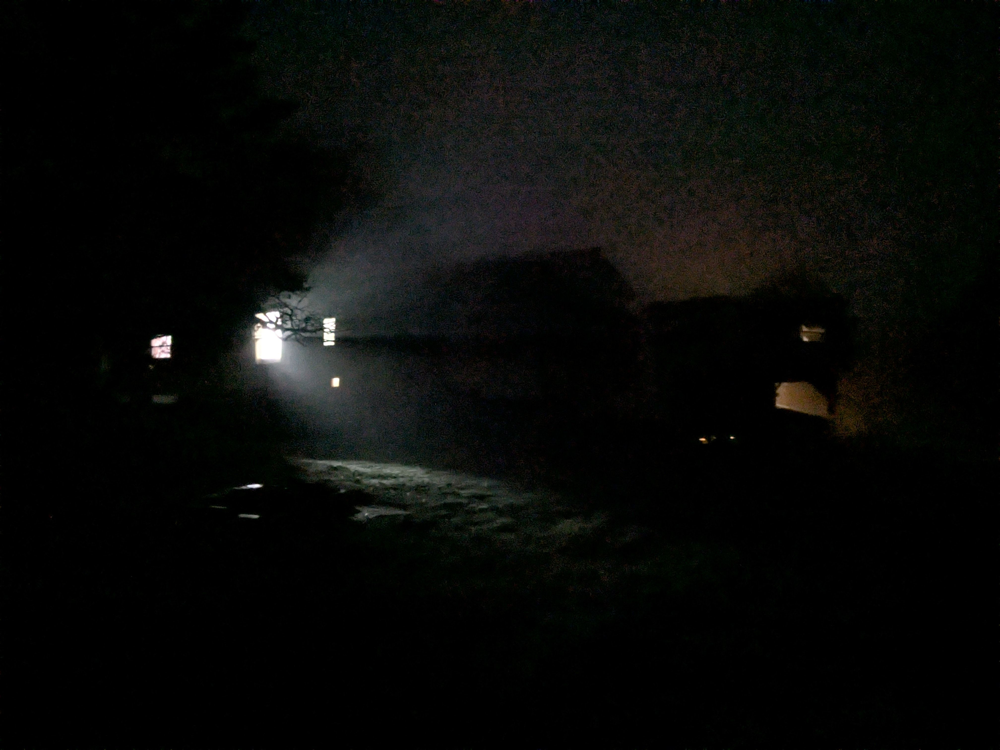
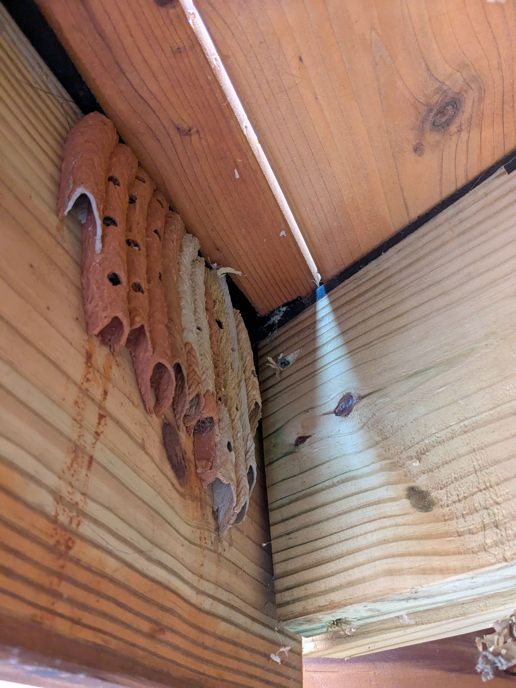
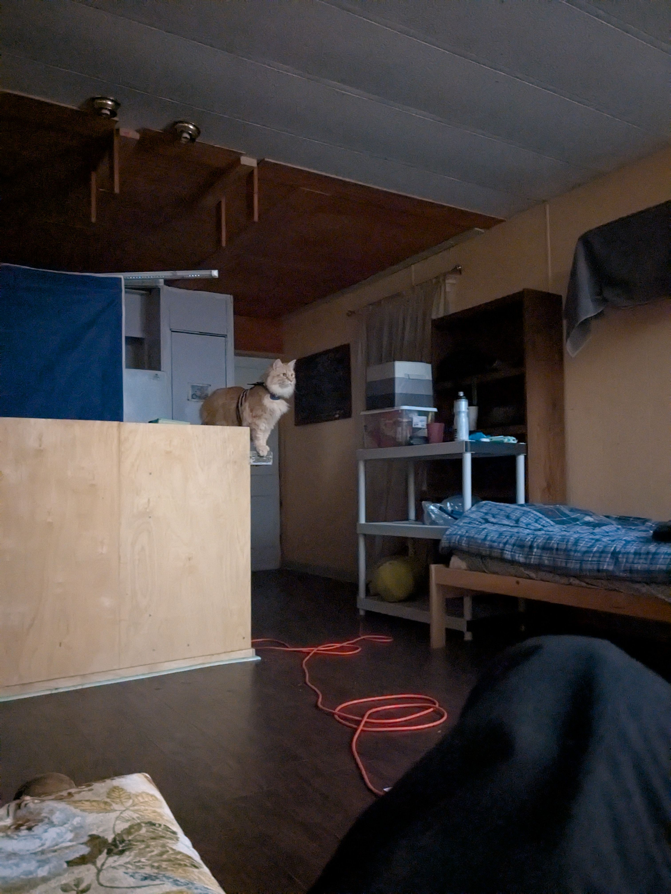

February
- 02/01/2025
- 02/02/2025
- 02/03/2025
- 02/04/2025
- 02/05/2025
- 02/06/2025
- 02/07/2025
- 02/08/2025
- 02/09/2025
- 02/10/2025
- 02/11/2025
- 02/12/2025
- 02/13/2025
- 02/14/2025
- 02/15/2025
- 02/16/2025
- 02/17/2025
- 02/18/2025
- 02/19/2025
- 02/01/2025[UKR]
- 02/02/2025[UKR]
- 02/03/2025[UKR]
- 02/04/2025[UKR]
- 02/05/2025[UKR]
- 02/06/2025[UKR]
- 02/07/2025[UKR]
- 02/08/2025[UKR]
- 02/09/2025[UKR]
- 02/10/2025[UKR]
- 02/11/2025[UKR]
- 02/12/2025[UKR]
- 02/13/2025[UKR]
- 02/14/2025[UKR]
- 02/15/2025[UKR]
- 02/16/2025[UKR]
- 02/17/2025[UKR]
- 02/18/2025[UKR]
- 02/19/2025[UKR]
[EN]
02/01/2025#
Miles driven: 2253
I think Big Bend NP is one of those parks you don't fall for immediately. Like Death Valley or Joshua Tree. After exploring it a bit more, I started to see its appeal. Multiple ecosystems are encompassed in this huge park. Some parts give Death Valley vibes, others – Grand Canyon and Zion. Not sure I want to go there again, though.
Mexico on the left, the US on the right:

A V-easy boulder problem:

And some climber sending it:

Helped an exchange student from Vietnam with a flat tire. A future computer scientist:

A rest stop/stop for the night with a spectacular view on a bridge:

I brought a slow cooker with me on this trip. It only draws 180W at peak consumption – battery-friendly. Started the borscht before going to bed yesterday, and had it for breakfast and dinner today. And still have some left for tomorrow's breakfast:


02/02/2025#
Miles driven: 2613
Leaving borscht in your car for 24 hours and then eating it will give you diarrhea 🤷♂ (no pictures).
My impressions about Texas so far:
- very little public lands (for historical reasons)
- it's hot in February
- you want to get places – you drive a lot
- gas prices 😍
- trucks, trucks everywhere
- people seem to be friendlier from the get-go
On this trip I've been seeing a lot of Jeeps with rubber ducks lined up behind a windshield. At first, I though that it's the same jeep following me on my journey (which would've been cool), but then I spotted several duck-infested jeeps at the same time. The tradition is called "Jeep ducking" where the Jeep owners leave the rubber beasts on other Jeeps as a gesture of kindness.
When I was getting gas today, saw an option to get "ethanol-free" unleaded fuel. Made me wonder what's that. Apparently this non-ethanol fuel is more suitable for smaller engines, like ones in boats and lawnmowers – where it can sit for extended periods of time and you don't want ethanol to attract moisture and cause issues. Since the gas station was in a coastal city of Corpus Christi – everything checks out.
02/03/2025#
Miles driven: 2853
A drive-through beach in Texas (Gulf of Mexi... America is on the left): 
I had breakfast in a diner, they had Fox News on a big screen TV – I wish I continued my news abstinence.
Austin is definitely not a typical American city. I've only been to suburbs, but I felt like I was somewhere in the outskirts of Kyiv.
On a drive to Austin, I was listening to different podcasts focusing on current political events. Trump did promise to dismantle the deep state, and it seems like he and his team had a clear plan on how to achieve that. The takeover of the Treasury by Musk is only one of the steps. Reaction from Democrats has been spineless so far. Congress as a legislative branch also isn't concerned with the government messing with their field of influence. Everything seems like an erosion of democratic institutions in this country. One may argue that it's been happening for a while now, but not as quick and forceful as in the last several weeks. What a time to be alive.
A cute courthouse in the "capital" of BBQ in Texas (I have yet to try the Texan BBQ):

02/04/2025#
Miles driven: 2853
Austin in February is hot. A lot of residential construction is going on. The number of barbershops is surprising.
I found a campground in South Austin – a small farmette within the city limits. It has showers, restrooms, chickens, goats, the Internet, and some interesting characters living on the property.


The Cathedral of Trash somewhere in the neighborhood:

I welcome a break from driving, for I definitely got tired of being on the road all the time. It's been almost two weeks since I left, and a discomfort from not having a "home base" has started creeping in. I guess it was expected.
Another, quite obvious observation – living out of a car/campgrounds is pretty comfortable, especially when the setup is right. But everything takes more time – cooking, cleaning, moving between places, etc. And I don't have time for things I expected I would have more time for. I need to try staying in the same place for several days.
Walmart has been my friend on this trip. I like the prices and the selection. Also, I can buy a lug wrench and peanut butter at the same store – convenient. What's not convenient is Walmart's policy on plastic bags, or rather the way cashiers distribute the items into the bags combined with how those bags are being placed for a buyer to pick them up. I bought five items there, including a steak for dinner. The bag with the steak never left Walmart 😩
My hippie campground has outdoor showers. For some reason, I really enjoy them. Or maybe I enjoy the mere fact of having a shower on demand?
02/05/2025#
Miles driven: 2862
Some of the streets in Austin could use more pedestrian crossings. My sampling data is very small, but the need to walk a quarter of a mile to cross a street in a residential neighborhood is annoying.
A contestant for the role of the best restroom:

I've been working on a hook for mkdocs that automatically adds Ukrainian translations for every journal entry. It's pretty impressive how advanced those models are. I can ask it for a "ready to go" solution to a problem and then iterate on the suggestions with the model. Like having a dialogue. It helps a lot that I'm very familiar with the domain – the familiarity was earned with a lot of blood and sweat – the timesaving is real. I used the LLM while building my power station – a lot of basic questions about electricity and grid. While I – a very proud graduate with an engineering degree, by the way – might still be lacking fundamental knowledge, I was able to grasp all concepts needed to assemble the power station that covers my needs. Which is very cool. But at the same time, having superficial knowledge leads to false confidence and oopsie daisy.
The campground I'm staying at for the third and last night is called "Camp EZ". I called it a hippie campground, but, honestly, it's a pretty unique place. The founder, Jim, converted this farmland into a small community. There are up to ten-ish people who live permanently on the land. Everyone has their unique small house (usually built out of a repurposed trailer). A chicken coop. Several goats and donkeys. Donkeys are territorial and they keep coyotes away. I spotted at least three cats. One Greek and one Bulgarian. Small herds of deer would loiter around with zero cares given about people. I have mentioned outdoor showers. And one of the restrooms is plain gorgeous. I really enjoy having the "nature" one step away from where you live. Even if it's a car 🙂
Perhaps, the only outcome of this trip will be my rating of the best restrooms I saw on this trip.
02/06/2025#
Miles driven: 2914
Apparently, the majority of the bee population in the world carries a parasite, Varroa Destructor. Except for bees in Australia, because everything is upside down there anyway.
I found this opportunity to work part-time in exchange for board in Texas near Austin. Today is the first day of helping Jack and his family with the construction of their house(s). I was staining wooden cabinets today. Also won a chess game against Adam, Jack's 6-year-old son; felt very accomplished.
02/07/2025#
Miles driven: 2914
Did more staining today. It's interesting that stain in Ukrainian is "пляма", a word with generally a negative connotation. But in English, "staining" means a process of applying oil/paint wood finish to change its color and enhance its protection against elements – something positive. But "to stain a shirt" would be something negative. My vocabulary for construction-related topics is non-existent.
The work shift is 8am - 1pm. Jack and Loraine, the hosts, are super chill people to work with. In the last 4 years they've had ~80 volunteers helping them with the construction projects on their property. You can definitely see a lot of progress, but doing almost everything by yourself sure takes a lot of time. Speaking of constructing things, I built a hand-washing station:

I'll be able to build a house in no time.
Filed my tax return today and cleaned the car. Also, almost fell for a scam via a text message.
02/08/2025#
Miles driven: 2960
The day was mainly dedicated to watering young trees (the weather has been abnormally warm and some of the trees are on the verge of dying); stopping algae that had settled on the shed's wall in its tracks; transplanting young American persimmon trees (one of the trees turned out to be a stump of an old tree); organizing some tools and materials.
Far fewer clouds today, but still a wonderful day. A shower and rooms with A/C make all the difference. Headly is a good boy:

Had a late night guest in my trailer house. The little dude was released into the wild later in the morning. The mouse trap was restocked with another cracker and placed back in my room.

Austin is home to the world's largest urban bat colony; the colony lives under a single bridge close to downtown. At some point, 30 years ago, they wanted to get rid of those bats in Austin, but then a grassroots conservation movement was launched with a goal of "redeeming" the image of bats amongst the public – they aren't bloodsucking monsters, but useful animals that eat mosquitoes (of which there are plenty in Austin), also they're cute (questionable). Didn't encounter the bats flying out from under the bridge myself, but, apparently, it's a spectacle to be seen.
Had the first "real" Texan BBQ in Austin at a very popular food truck. Wasn't impressed – too freaking salty. Technically it was Texan BBQ with Egyptian flavor... Aiham promised to take me to one of the original BBQ places tomorrow.
02/09/2025#
Miles driven: 3004
The weather has cooled down today, so I figured I could go for a a run. East Austin is bustling with new housing development. Entire neighborhoods are being erected at the same time. That's how you solve the housing crisis, California. I was surprised to see a "centralized" mailbox next to one of the freshly built neighborhoods:

Probably that's a common approach with new neighborhoods, but how would I know living in LA. Haha.
Had BBQ in a different place, a traditional yet popular place. To say I was impressed to the depths of my soul – no, it was okay and expensive. BBQ is a religion here and I'm not subscribed to it. Daria in Santa Monica makes better kebabs and grilled meat. "Copper BBQ" in Big Pine makes better BBQ. I hope BBQ police will let me out of Texas.
What does it mean "sensing with the AI"?

Finished implementing the hook for automatic journal entries translation – fast and free Wi-Fi at Aiham's place, yay! The Claude Sonnet is leaps and bounds better at producing polished Ukrainian translation than GPT-4o (using same system prompt, of course).
02/10/2025#
Miles driven: 3004
The forecast called for a thunderstorm this past night but nothing happened. The day's been cloudy and chilly though, making you want to move more. It should rain later today.
We were moving some freshly cut branches from the roadside when I spotted a bird's nest; must've been already empty when the branch was cut:

Spent part of a day sanding cedar planks that would make sidings on the "octagon" building (the "rectangle" building on the right already has siding in place):

It was surprisingly satisfying to chisel out rotten wood from around knots or in the cracks. Gotta be careful not to chisel out something from my hand.
Today I learned that FORD stands for FixOrRepairDaily or FoundOnTheRoadDead. The family uses an old Ford van as a workhorse – Hamo (Jack's dad) has issues with its reliability.
I was praising Austin's housing development, and today Jack told me that many of those new neighborhoods are being built in place of older houses. Native Austinites don't consider this new housing affordable; the city has been experiencing a big influx of wealthier people from other states (tech industry mainly) – new housing is for them. I guess, it's the unavoidable circle of life.
02/11/2025#
Miles driven: 3004
A rainy day today; spent the entire shift sanding the sidings. Can feel my shoulders – lots of chiseling isn't something you do every day.
Learned about glulam today, "glued laminated timber". A structural engineering wood product made of dimensional lumber bonded together by certain types of adhesive. In glulam, only the outer layers are often made of stronger, higher-quality wood because they experience the most stress, especially when bending. The inner layers can be made of softer, lower-quality wood since they primarily contribute to volume and stability only. Allows better cost/strength balance.
02/12/2025#
Miles driven: 3004
The rain continued well into the night and then for a few hours in the morning. Weather forecasts for the LA area are quite reliable – it's either perfect weather, rain, or wildfire. The timing of rain, for example, is also accurate. But here the weather forecast was all over the place – it said that rain would start on Monday night; it would be saying it was raining while it obviously was not. Lorraine said the nearest, and only, weather station is 6 miles away; plus the property sits on a hill – the actual weather near the weather station can be much different from what's here.
The family has the same World's Atlas as we had. In English, of course. What a coincidence:

Continued sanding sidings today; getting into the groove. Headly, for lack of a helpful hand to scratch him, has resorted to grass and sawdust as a scratcher:

Chiseling out pith and rotten wood is strangely rewarding, as I said earlier. Today I caught myself thinking that a dentist drilling out a cavity probably feels the same way. The stakes are higher though.
Learned today that cedar wood with its aromatic oils has strong bug and pest repellent properties. The tree also contains extracts that are toxic to fungi and other rot-causing elements. The sidings I'm working on are from cedar, I rarely see signs of a source tree being bug-infested at a significant scale.
The mouse trap caught another invader this past night. I put it out on the porch at night, because the mouse was making noises. Found it dead in the morning. Too cold I guess 🤷♂

02/13/2025#
Miles driven: 3004
What's the point in reading news often if you don't have control over things that are happening? Sometimes, rarely, the news is positive – it might uplift the spirit, motivate, make the world look more hopeful. But oftentimes, the news would evoke negative emotions, anxiety, agitation. Why would anyone want to voluntarily inflict harm on oneself? Being aware of things happening in the world or things that matter to you is important, but how often does one need to get updates from the news? 🤔
I've been using orbital sanders a lot recently. The tool is relatively simple to operate – velcro a sandpaper disk onto a backing disk, push a trigger, press the tool against a surface, and sand away. Yet, I've been burning through the sandpaper disks more often than I should – the sanding surface of a disk is still like new, but the velcro surface is completely worn down. Velcro connections use hook-and-loop fasteners. One surface (the backing disk on the orbital) has a ton of tiny plastic hooks, another surface (the back of a sandpaper disk) – a ton of soft, curly, hair-like loops. The velcro connection would disengage if one of the surfaces loses its properties. With orbital sanders, the reason for that is excessive heat that melts either hooks or loops. Excessive heat will be generated if you are 1) pressing the orbiter to the surface too strongly 2) using only the edge of a disk to sand tricky parts/be more precise 3) keeping the sander in the same place for too long. I was doing 1 and 2, especially 2.
How can one make two objects separated by some terrain completely level? One can use a laser, but it can be expensive and has its limitations, especially outdoors. A simple yet reliable method is to use water. Use water in a transparent tube – no matter the terrain or obstacles, the water level on both ends will always be the same. Unless the distance is hundreds of miles, then the curvature of the Earth will mess things up a bit (the Flat Earth society would argue, though).
The temperature swings in this area are unusual:

There are no mountains or other natural obstacles around – what the wind brings, that will be the weather today. And gosh it's been windy today. At night, when it was shaking the trailer house, I thought of Dorothy from Wizard of Oz and a road of yellow brick.
02/14/2025#
Miles driven: 3004
2/3 of sidings are done. The wind has subsided.
Leafcutter ants are fungus-growing ants prevalent in South America. They use fungi to feed their larvae. And in exchange, the ants feed fungi and protect them from pests and mold. Ant-fungus mutualism. Those ants actually domesticated the fungi (took them only 30 million years to complete) – it now produces special nutritious mycelium that grows in bundles to specifically feed the ants. Anyway, those ants form some of the largest and most complex animal societies, next to humans – meaning there are a lot of them. And when a lot of ants are cutting the leaves on trees or plants (thus the name) as fungi feed, large-scale deforestation occurs.. It's a real challenge to grow trees in Brazil in the areas where leafcutter ant colonies have a presence. Just a random fact told to me by a new volunteer from Brazil, Pedro. And another fact I learned from traveling down the ant rabbit hole – when the ants are on the move, they'll be attacked by certain flies that lay eggs in the crevices of the worker ants' heads. Often, a minim (a smaller worker) will sit on a worker and ward off any attack. I chuckled trying to imagine that.
The UFO (our trailer house, that is) landing:

02/15/2025#
Miles driven: 3004
Learned to play a dice game called "10000". Quite addictive. I won my first game 🎲
Installed a bunch of metal braces to reinforce the corners on a wooden deck. Had to remove this abandoned black wasp's nest too.

02/16/2025#
Miles driven: 3004
We planted 750 Loblolly Pine seedlings today – reforestation in action. The survival rate won't be too high, though. But considering cost/effort ratio (7 cents per sapling/~3.5 hours of life of 6 adults and two kids), it was time well spent.
I read about the Leafcutter ants only a couple of days ago, and today we found the result of their "work". A tree completely stripped of leaves; its leaves (or a part of them) gathered in a neat heap next to the entrance hole. Texas is ehome to one of the species of leaf-cutting ants, Atta texana. They love pine trees – their fungi love pine trees – especially loblolly pines. Good luck, little seedlings.

Hesperia (Pi), the horse, lies here. It must've been good at going in circles:

It's been nice, sunny, and windy today.
02/17/2025#
Miles driven: 3004
I made borscht for dinner today. The news had spread, and literally everyone in the household came to have some of it. 11 people including 2 children – my biggest audience so far – ate about 5 or 6 liters of borscht (the entire pot was gone) and survived. The projection of Ukrainian soft power.
My mom's borscht recipe:
1. soak some beans overnight (Peruvian beans, for example).
2. put beans and meat (1.5 - 2 lb beef; ideally on a bone) in a pot; fill it ~0.7 full with water; bring it to a boil.
3. remove the froth that comes from the beans when they get agitated in water. Today I learned: you can actually leave the froth as it is. Even though the foam might look concerning, it's safe to eat. The foam consists of proteins, starches, and a natural compound called saponins. Saponins creates foam when beans get agitated in water.
4. Let it simmer for 1.5 hours.
5. Cut and add 3 large potatoes.
6. Sauté one medium onion and a large grated carrot; Sautéing is optional – I had time and made things a bit fancier.
7. Let potatoes simmer for 15-20 minutes, and then add onions and carrots to the mix.
8. Grate 3 medium beets, and add them to the party. The borscht now looks like borscht - bloody red.
9. Let it simmer for 5 minutes, and meanwhile add salt to your taste (I added 2.5-3 tbsp of white death)
10. Remove the pot from a burner, and the icing on the cake – a bunch of fresh chopped dill
11. Serve it with good bread, sour cream, and garlic. I wish I had salo with me.
02/18/2025#
Miles driven: 3004
It's been cloudy and rainy today. The bees from local beehives decided to establish a new home at the highest point of the hexagon building 🐝

While making lunch today, I saw cabbage in the fridge ... it should've been added to the borscht yesterday, somewhere in step 7 of the recipe. No one complained. Also, there are zero casualties from my borscht.
02/19/2025#
Miles driven: 3004
Very. Windy. Day. Did some sanding in the shed (too cold and windy to be outside).
The family had a movie afternoon today. I stuck around and watched the "Flow" animation movie with them. Good stuff.
The weather here is bizarre:

My mom mentioned today the eventfulness of the last 30 days, and how it felt like a lot of time, more than a month, had passed. It's been almost a month since I left LA, but it feels like much longer. The novelty of experiences, I guess. But I kind of like it; I like feeling the passage of time at a "slow" pace. When I was working full-time and had the same routines day in and day out, an entire month could flash in front of me in the blink of an eye. It bothered me. I don't think though that one has to travel and meet new people all the time to make the flow of time slower. The key is purpose, I think. If something is done with purpose, the time spent on it will be perceived as "worthy and well-spent". If days, months, years are comprised of periods of time "well-spent", they will not blur into something we would regret as wasted time. Of course, going through turmoil and hardships can also be a time drag, but one can find a purpose there too.
A new volunteer. We don't need a mouse trap anymore:

[UKR]
02/01/2025[UKR]#
КМ проїхав: 3626
Здається, Біг Бенд - це один з тих парків, які не викликають захоплення з першого погляду. Як Долина Смерті чи Джошуа Трі. Після детальнішого дослідження я почав розуміти його привабливість. У цьому величезному парку переплітаються різні екосистеми. Деякі місця нагадують Долину Смерті, інші – Гранд Каньйон та Зайон. Втім, не впевнений, що хочу туди повернутися.
Мексика ліворуч, США праворуч:
Дуже простий боулдерінг:
І хтось його пролазить:
Допоміг студенту по обміну з В'єтнаму з проколотим колесом. Майбутній комп'ютерний науковець:
Зупинка для відпочинку/ночівлі з неймовірним видом на міст:
Взяв з собою в подорож мультиварку. Споживає максимум 180Вт – акумулятору це під силу. Заклав борщ перед сном вчора, і їв його сьогодні на сніданок та вечерю. І ще залишилось на завтрашній сніданок:
02/02/2025[UKR]#
КМ проїхав: 4206
Якщо залишити борщ в машині на 24 години, то отримаєш діарею 🤷♂ (без фоток).
Мої враження про Техас поки що:
-
дуже мало громадських земель (з історичних причин)
-
в лютому спекотно
-
хочеш кудись дістатися – багато їздиш
-
ціни на бензин 😍
-
вантажівки, вантажівки всюди
-
люди здаються дружелюбнішими з самого початку
Під час цієї подорожі я бачив багато Джипів з гумовими качечками, вишикуваними за лобовим склом. Спочатку я думав, що це один і той самий джип переслідує мене в подорожі (що було б круто), але потім помітив кілька качко-заражених джипів одночасно. Ця традиція називається "Jeep ducking", коли власники Джипів залишають гумових звірят на інших Джипах як жест доброзичливості.
Коли я сьогодні заправлявся, побачив опцію заправитися "безетаноловим" неетильованим пальним. Замислився, що це таке. Виявляється, це пальне без етанолу краще підходить для менших двигунів, як-от у човнах та газонокосарках – де воно може стояти тривалий час, і ти не хочеш, щоб етанол притягував вологу і створював проблеми. Оскільки заправка була в прибережному місті Корпус-Крісті – все логічно.
02/03/2025[UKR]#
КМ проїхав: 4592
Пляж, на який можна заїхати машиною в Техасі (Мексиканська затока... Америка ліворуч):
Снідав у закусочній, де на великому екрані крутили Fox News – шкода, що порушив свою обітницю не дивитися новини.
Остін точно не типове американське місто. Я був лише в передмісті, але відчуття було, наче десь на околицях Києва.
По дорозі до Остіна слухав різні подкасти про поточні політичні події. Трамп обіцяв розвалити глибинну державу, і схоже, що в нього та його команди був чіткий план як це зробити. Захоплення Казначейства Маском – це лише один з кроків. Реакція демократів поки що безхребетна. Конгрес як законодавча гілка теж не особливо переймається тим, що уряд втручається в їхню сферу впливу. Все виглядає як ерозія демократичних інституцій в цій країні. Можна сказати, що це відбувається вже давно, але не так швидко і агресивно, як в останні кілька тижнів. От такі часи випало нам жити.
Симпатичний будинок суду в "столиці" техаського BBQ (я ще маю спробувати місцеве барбекю):
02/04/2025[UKR]#
КМ проїхав: 4592
Остін у лютому – спекотний. Скрізь купа житлового будівництва. Дивує кількість перукарень.
Знайшов кемпінг у Південному Остіні – маленька ферма в межах міста. Є душові, туалети, кури, кози, інтернет і кілька колоритних персонажів, що живуть на території.
Собор зі Сміття десь по сусідству:
Радий перепочити від водіння, бо вже точно втомився постійно бути в дорозі. Минуло майже два тижні відтоді, як я поїхав, і почав закрадатися дискомфорт від відсутності "домашньої бази". Мабуть, цього слід було очікувати.
Ще одне, досить очевидне спостереження – жити в машині/кемпінгах доволі комфортно, особливо коли все правильно облаштовано. Але все забирає більше часу – готування, прибирання, переміщення між місцями тощо. І в мене нема часу на речі, на які я очікував його мати більше. Треба спробувати затриматись на одному місці на кілька днів.
Walmart став моїм другом у цій подорожі. Подобаються ціни та асортимент. Плюс можу купити балонний ключ і арахісове масло в одному магазині – зручно. Що незручно, то це політика Walmart щодо пластикових пакетів, чи радше те, як касири розподіляють товари по пакетах у поєднанні з тим, як ці пакети викладають для покупця. Купив там п'ять товарів, включно зі стейком на вечерю. Пакет зі стейком так і не покинув Walmart 😩
У моєму хіпі-кемпінгу є душ просто неба. Чомусь мені це дуже подобається. Чи може мені подобається сам факт наявності душу на вимогу?
02/05/2025[UKR]#
КМ проїхав: 4605
Деяким вулицям в Остіні не завадило б більше пішохідних переходів. Мій досвід, звісно, обмежений, але той факт, що треба йти пів кілометра, щоб перейти вулицю в житловому районі – це якось не дуже.
Претендент на звання найкращого туалету:
Працюю над хуком для mkdocs, який автоматично додає українські переклади до кожного запису в щоденнику. Вражає, наскільки просунутими стали ці моделі. Можу попросити "готове" рішення проблеми, а потім ітеративно покращувати його в діалозі з моделлю. Як справжня розмова. Дуже допомагає те, що я добре знаюся на предметі – це знання далося потом і кров'ю – але тепер реально економить час. Я використовував LLM під час збірки своєї електростанції – багато базових питань про електрику та мережу. І хоча я – до речі, дуже гордий власник інженерного диплому – можливо, все ще маю прогалини в базових знаннях, мені вдалося зрозуміти всі концепти, необхідні для збірки електростанції під мої потреби. Що дуже круто. Але водночас, поверхневі знання ведуть до надмірної впевненості і... ой-йой-йой.
Кемпінг, де я зупинився на третю і останню ніч, називається "Camp EZ". Я назвав його хіпі-кемпінгом, але, чесно кажучи, це доволі унікальне місце. Засновник, Джим, перетворив цю фермерську землю на невелику спільноту. Тут постійно живе близько десяти людей. У кожного свій унікальний маленький будиночок (зазвичай переобладнаний з трейлера). Є курник. Кілька кіз та віслюків. Віслюки територіальні і відганяють койотів. Я помітив щонайменше трьох котів. Одного грека і одного болгарина. Невеликі групи оленів тиняються навколо, абсолютно не переймаючись присутністю людей. Я вже згадував про душ просто неба. А один з туалетів просто розкішний. Мені дуже подобається, коли "природа" на відстані одного кроку від місця, де ти живеш. Навіть якщо це машина 🙂
Можливо, єдиним результатом цієї подорожі буде мій рейтинг найкращих туалетів, які я бачив у дорозі.
02/06/2025[UKR]#
КМ проїхав: 4689
Виявляється, більшість бджіл у світі носять в собі паразита під назвою Varroa Destructor. Крім бджіл в Австралії, бо там і так все догори дригом.
Знайшов можливість працювати part-time в обмін на проживання в Техасі неподалік від Остіна. Сьогодні перший день допомоги Джеку та його родині з будівництвом їхнього будинку (чи будинків). Сьогодні фарбував дерев'яні шафи. Ще виграв партію в шахи у Адама, шестирічного сина Джека; відчуваю себе справжнім чемпіоном.
02/07/2025[UKR]#
КМ проїхав: 4689
Сьогодні знову займався морінням деревини. Цікаво, що в українській мові "пляма" має негативне забарвлення. А в англійській "staining" - це процес нанесення масла чи фарби на дерево, щоб змінити його колір та захистити від зовнішніх впливів – тобто щось позитивне. Хоча "to stain a shirt" (заплямувати сорочку) – це вже негатив. Мій словниковий запас щодо будівельної тематики просто відсутній.
Робоча зміна з 8 ранку до 1 дня. Джек і Лорейн, господарі, – супер спокійні люди, з якими приємно працювати. За останні 4 роки у них було десь 80 волонтерів, які допомагали з будівельними проектами на їхній території. Прогрес однозначно помітний, але коли робиш майже все самотужки – це займає купу часу. До речі про будівництво, я змайстрував станцію для миття рук:
Скоро вже зможу будинки зводити.
Подав сьогодні податкову декларацію і помив машину. Ще ледь не попався на шахрайське повідомлення.
02/08/2025[UKR]#
КМ проїхав: 4689
День переважно пішов на полив молодих дерев (погода стоїть аномально тепла, і деякі дерева на межі загибелі); боротьбу з водоростями, що окупували стіну сараю; пересадку молодих американських хурм (одне з дерев виявилося пеньком старого дерева); впорядкування інструментів та матеріалів.
Сьогодні хмар було менше, але день все одно чудовий. Душ і кімнати з кондиціонером - це просто порятунок. Хедлі - хороший хлопчик:
Вночі в трейлері був пізній гість. Малого випустили на волю пізніше зранку. Мишоловку перезарядили новим крекером і повернули в кімнату.
В Остіні живе найбільша міська колонія кажанів у світі - вони мешкають під одним мостом неподалік від центру міста. Десь 30 років тому хотіли позбутися цих кажанів в Остіні, але потім запустили громадський рух за збереження, щоб "реабілітувати" образ кажанів в очах публіки - вони не кровожерні монстри, а корисні тварини, які їдять комарів (яких в Остіні повно), та й взагалі милі (це вже як подивитися). Сам не бачив, як кажани вилітають з-під мосту, але кажуть, що це те ще видовище.
Спробував перше "справжнє" техаське барбекю в Остіні в дуже популярному фуд-траку. Не вразило - занадто пересолене. Технічно це було техаське барбекю з єгипетським присмаком... Айхам пообіцяв завтра звозити мене в одне з оригінальних місць для барбекю.
02/09/2025[UKR]#
КМ проїхав: 4835
Сьогодні похолоднішало, тож я вирішив, що можна піти на пробіжку. Східний Остін кипить від нового житлового будівництва. Цілі райони зводяться одночасно. Ось так вирішується житлова криза, Каліфорніє. Здивувався, побачивши "централізовану" поштову скриньку біля одного з щойно збудованих районів:
Мабуть, це звичайна практика в нових районах, але звідки мені знати, живучи в ЛА. Хаха.
Поїв BBQ в іншому місці, традиційному та популярному закладі. Сказати, що я був вражений до глибини душі – ні, було нормально і дорого. BBQ тут – це релігія, а я не її прихожанин. Дарія в Санта-Моніці робить кращий шашлик та м'ясо на грилі. "Copper BBQ" в Біг Пайн робить кращий BBQ. Сподіваюся, BBQ-поліція випустить мене з Техасу.
Що означає "sensing with the AI"?
Закінчив імплементацію хука для автоматичного перекладу щоденникових записів – швидкий та безкоштовний Wi-Fi у Айхама, єєє! Claude Sonnet набагато краще справляється з відполірованим українським перекладом, ніж GPT-4o (використовуючи той самий системний промпт, звісно).
02/10/2025[UKR]#
КМ проїхав: 4834
Прогноз обіцяв грозу минулої ночі, але нічого не сталося. День був хмарний та прохолодний – така погода, що хочеться більше рухатись. Пізніше має бути дощ.
Коли ми прибирали свіжозрізані гілки при дорозі, я помітив пташине гніздо; мабуть, воно вже було порожнім, коли зрізали гілку:
Частину дня провів шліфуючи кедрові дошки, які стануть обшивкою "восьмикутної" будівлі (на "прямокутній" будівлі справа обшивка вже на місці):
Було напрочуд приємно видовбувати гнилу деревину навколо сучків та з тріщин. Треба бути обережним, щоб не видовбати щось із власної руки.
Сьогодні дізнався, що FORD розшифровується як "Фіксуй Або Ремонтуй Щодня" чи "Знайдений Обабіч Розбитий Донезмоги". Родина використовує старий Ford як робочого коня – у Хамо (батька Джека) постійні проблеми з його надійністю.
Я хвалив житлову забудову Остіна, і сьогодні Джек розповів, що багато з цих нових районів будують на місці старих будинків. Корінні остінці не вважають це нове житло доступним; місто пережило великий наплив заможніших людей з інших штатів (переважно з технологічної галузі) – нове житло для них. Мабуть, це неминуче коло життя.
02/11/2025[UKR]#
КМ проїхав: 4835
Сьогодні дощовий день; всю зміну шліфував обшивку. Плечі нагадують про себе – не щодня доводиться стільки працювати стамескою.
Дізнався сьогодні про клеєний брус або "glulam". Це інженерний деревʼяний матеріал, який виготовляється з пиломатеріалів, склеєних між собою спеціальним клеєм. У клеєному брусі зовнішні шари часто роблять з міцнішої, якіснішої деревини, бо саме вони витримують найбільше навантаження, особливо при згинанні. Внутрішні шари можуть бути з мʼякшої, менш якісної деревини, оскільки вони в основному відповідають лише за обʼєм та стабільність. Це дозволяє досягти кращого балансу між ціною та міцністю.
02/12/2025[UKR]#
КМ проїхав: 4834
Дощ продовжувався до пізньої ночі, а потім ще кілька годин зранку. Прогнози погоди для району ЛА досить надійні – там або ідеальна погода, або дощ, або лісова пожежа. Час початку дощу, наприклад, теж передбачають точно. Але тут прогноз погоди був геть непередбачуваний – казали, що дощ почнеться в понеділок вночі; повідомляли про дощ, коли його явно не було. Лорейн пояснила, що найближча (і єдина) метеостанція знаходиться за 10 кілометрів; плюс садиба розташована на пагорбі – реальна погода біля метеостанції може сильно відрізнятися від того, що тут.
У родини є такий самий атлас світу, як був у нас. Англійською, звісно. Оце збіг:
Сьогодні продовжив шліфувати сайдинг; вже втягнувся в процес. Хедлі, через відсутність помічної руки для почухати, перейшов на траву та тирсу як інструменти для чухання:
Вирізати серцевину та гнилу деревину дивним чином приносить задоволення, як я вже казав. Сьогодні зловив себе на думці, що дантист, який висвердлює карієс, мабуть, відчуває те саме. Хоча ставки там вищі.
Сьогодні дізнався, що кедрова деревина зі своїми ароматичними оліями має потужні властивості відлякування комах та шкідників. Дерево також містить екстракти, які токсичні для грибків та інших елементів, що викликають гниття. Сайдинг, з яким я працюю, зроблений з кедру, і я рідко бачу ознаки того, що вихідне дерево було серйозно уражене комахами.
Мишоловка цієї ночі спіймала ще одного непроханого гостя. Я виставив її на ґанок на ніч, бо миша шуміла. Зранку знайшов її мертвою. Мабуть, замерзла 🤷♂
02/13/2025[UKR]#
КМ проїхав: 4834
Який сенс постійно читати новини, якщо ти не маєш впливу на те, що відбувається? Інколи, зрідка, новини бувають позитивними – можуть підняти настрій, змотивувати, змусити світ здаватися більш обнадійливим. Але частіше новини викликають негативні емоції, тривогу, збудження. Навіщо добровільно завдавати собі шкоди? Бути в курсі подій у світі чи речей, які тебе стосуються – важливо, але як часто насправді потрібно оновлювати ці знання? 🤔
Останнім часом я багато працюю з орбітальною шліфмашиною. Інструмент доволі простий у використанні – кріпиш шліфувальний диск на липучку до опорної подушки, натискаєш на курок, притискаєш інструмент до поверхні і шліфуєш. Але я занадто часто спалюю шліфувальні диски – робоча поверхня диска ще як нова, а липучка повністю зношена. Липучки працюють за принципом гачків та петель. На одній поверхні (опорній подушці шліфмашини) – безліч маленьких пластикових гачків, на іншій (зворотній стороні шліфувального диска) – безліч м'яких, кучерявих петель, схожих на волоски. Липучка перестає триматися, якщо одна з поверхонь втрачає свої властивості. У випадку з орбітальними шліфмашинами причина – надмірне тепло, яке плавить або гачки, або петлі. Надмірне тепло виникає, якщо ти 1) занадто сильно тиснеш шліфмашиною на поверхню 2) використовуєш тільки край диска для шліфування складних місць/щоб бути точнішим 3) тримаєш шліфмашину довго на одному місці. Я грішив пунктами 1 і 2, особливо другим.
Як можна вирівняти два об'єкти, розділені якоюсь місцевістю? Можна використати лазер, але це дорого і має свої обмеження, особливо надворі. Простий але надійний метод – використати воду. Береш воду в прозорій трубці – незалежно від рельєфу чи перешкод, рівень води на обох кінцях завжди буде однаковим. Хіба що відстань сотні кілометрів, тоді кривизна Землі трохи все зіпсує (хоча товариство Пласкої Землі з цим посперечалося б).
Перепади температури в цій місцевості незвичайні:
Тут немає гір чи інших природних перешкод – яку погоду вітер принесе, така сьогодні й буде. І боже, як же сьогодні вітряно. Вночі, коли трейлер хитало, я згадав про Дороті з Чарівника країни Оз та дорогу з жовтої цегли.
02/14/2025[UKR]#
КМ проїхав: 4835
2/3 сайдингу вже готово. Вітер нарешті вщух.
Мурахи-листорізи – це грибовирощувальні мурахи, які поширені в Південній Америці. Вони використовують гриби для годування своїх личинок. А натомість мурахи годують гриби та захищають їх від шкідників і плісняви. Мурашино-грибний мутуалізм. Ці мурахи фактично одомашнили гриби (їм знадобилося всього 30 мільйонів років) – тепер гриби виробляють особливий поживний міцелій, що росте пучками спеціально для годування мурах. В будь-якому разі, ці мурахи формують одні з найбільших і найскладніших тваринних спільнот після людських – тобто їх дуже багато. І коли багато мурах ріжуть листя з дерев чи рослин (звідси й назва) для годування грибів, відбувається масштабне знеліснення... Це реальна проблема при вирощуванні дерев у Бразилії в районах, де присутні колонії мурах-листорізів. Просто випадковий факт, який розповів мені новий волонтер з Бразилії, Педро. І ще один факт, який я дізнався, зануривши у кролячу нору про мурах – коли мурахи в русі, на них нападають певні мухи, які відкладають яйця в щілинах голів робочих мурах. Часто мінім (менший робітник) сидить на робочій мурасі й відбиває будь-які атаки. Я посміхнувся, намагаючись це уявити.
Приземлення НЛО (тобто нашого трейлера):
02/15/2025[UKR]#
КМ проїхав: 4835
Навчився грати в гру з кубиками під назвою "10000". Затягує неабияк. Виграв свою першу партію 🎲
Поставив купу металевих кріплень, щоб зміцнити кути дерев'яної тераси. Довелося ще й прибрати покинуте гніздо чорних ос.
02/16/2025[UKR]#
КМ проїхав: 4834
Сьогодні посадили 750 саджанців сосни Лоблолі – це вам не жарти, справжня реконструкція лісу. Хоча рівень виживання буде не надто високим. Але якщо врахувати співвідношення витрат до зусиль (70 центів за саджанець/~3.5 години життя 6 дорослих і двох дітей), час було витрачено недаремно.
Лише кілька днів тому я читав про мурах-листорізів, і сьогодні ми побачили результати їхньої "роботи". Дерево повністю без листя; його листя (чи частина) акуратно складені купкою біля входу в мурашник. У Техасі живе один з видів мурах-листорізів, Atta texana. Вони обожнюють соснові дерева – точніше їхні гриби обожнюють соснові дерева – особливо сосну Лоблолі. Тримайтеся, малі саджанці.
Тут лежить Гесперія (Пі), кінь. Мабуть, добре вмів ходити по колу:
Сьогодні було гарно, сонячно і вітряно.
02/17/2025[UKR]#
КМ проїхав: 4834
Сьогодні зварив борщ на вечерю. Новина швидко розлетілась, і буквально всі мешканці будинку прийшли його скуштувати. 11 людей, включаючи двох дітей – моя найбільша аудиторія на сьогодні – з'їли десь 5-6 літрів борщу (весь казан спорожнів) і вижили. Проєкція української м'якої сили.
Мамин рецепт борщу:
1. замочити квасолю на ніч (наприклад, перуанську).
2. покласти квасолю та м'ясо (700-900 грам яловичини; в ідеалі на кістці) в каструлю; залити водою приблизно на 70%; довести до кипіння.
3. зняти піну, яка з'являється від квасолі при кипінні. Сьогодні дізнався: насправді можна залишити піну як є. Хоч піна може виглядати підозріло, вона безпечна для вживання. Піна складається з білків, крохмалю та природної сполуки під назвою сапоніни. Сапоніни утворюють піну, коли квасоля вариться у воді.
4. Варити на повільному вогні 1.5 години.
5. Порізати і додати 3 великі картоплини.
6. Обсмажити одну середню цибулину та велику терту моркву; Обсмажування необов'язкове – просто в мене був час зробити все по-fancy.
7. Варити картоплю 15-20 хвилин, потім додати цибулю та моркву.
8. Натерти 3 середні буряки і додати їх до компанії. Тепер борщ виглядає як борщ – криваво-червоний.
9. Варити 5 хвилин, тим часом посолити за смаком (я додав 2.5-3 ст.л. білої смерті)
10. Зняти каструлю з вогню, і вишенька на торті – жменя свіжого порізаного кропу
11. Подавати з хорошим хлібом, сметаною та часником. Шкода, що не було сала.
02/18/2025[UKR]#
КМ проїхав: 4835
Сьогодні хмарно та дощить. Бджоли з місцевих вуликів вирішили облаштувати новий дім на найвищій точці будівлі-шестикутника 🐝
Коли сьогодні готував обід, побачив у холодильнику капусту... її треба було додати до борщу ще вчора, десь на 7-му кроці рецепту. Ніхто не скаржився. До того ж, після мого борщу жертв не було.
02/19/2025[UKR]#
КМ проїхав: 4834
Дуже. Вітряний. День. Трохи пошліфував у сараї (надто холодно й вітряно щоб працювати надворі).
Сім'я влаштувала сьогодні кіно-день. Я приєднався і подивився з ними мультфільм "Flow". Класна штука.
Погода тут якась дивна:
Мама сьогодні згадала, яким насиченим видались останні 30 днів, і як здається, що минуло набагато більше часу, ніж місяць. Вже майже місяць як я виїхав з ЛА, але відчувається, ніби значно довше. Мабуть, справа в новизні вражень. Але мені це навіть подобається; подобається відчувати, як час минає "повільно". Коли я працював повний день і мав одні й ті ж рутинні справи день у день, цілий місяць міг промайнути як одна мить. Це мене турбувало. Але я не думаю, що треба постійно подорожувати і знайомитися з новими людьми, щоб сповільнити плин часу. Ключ, мабуть, у цілеспрямованості. Якщо щось робиться з певною метою, витрачений на це час сприймається як "вартісний і добре проведений". Якщо дні, місяці, роки складаються з періодів "добре проведеного" часу, вони не зіллються в щось, про що ми будемо шкодувати як про змарнований час. Звісно, проходження через труднощі та випробування теж може тягнутися довго, але й тут можна знайти свою мету.
Новий волонтер. Мишоловка нам більше не потрібна: